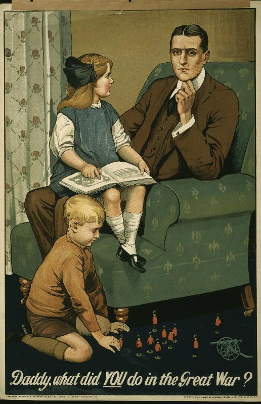

Daddy, What Did You Do in the Great War?
Savile Lumley · 1915 · Poster · Library of Congress, Prints and Photographs Division
Free to use
Open in The ArtchiveFull-size file ↗

Savile Lumley · 1915 · Poster · Library of Congress, Prints and Photographs Division
Free to use
Open in The ArtchiveFull-size file ↗